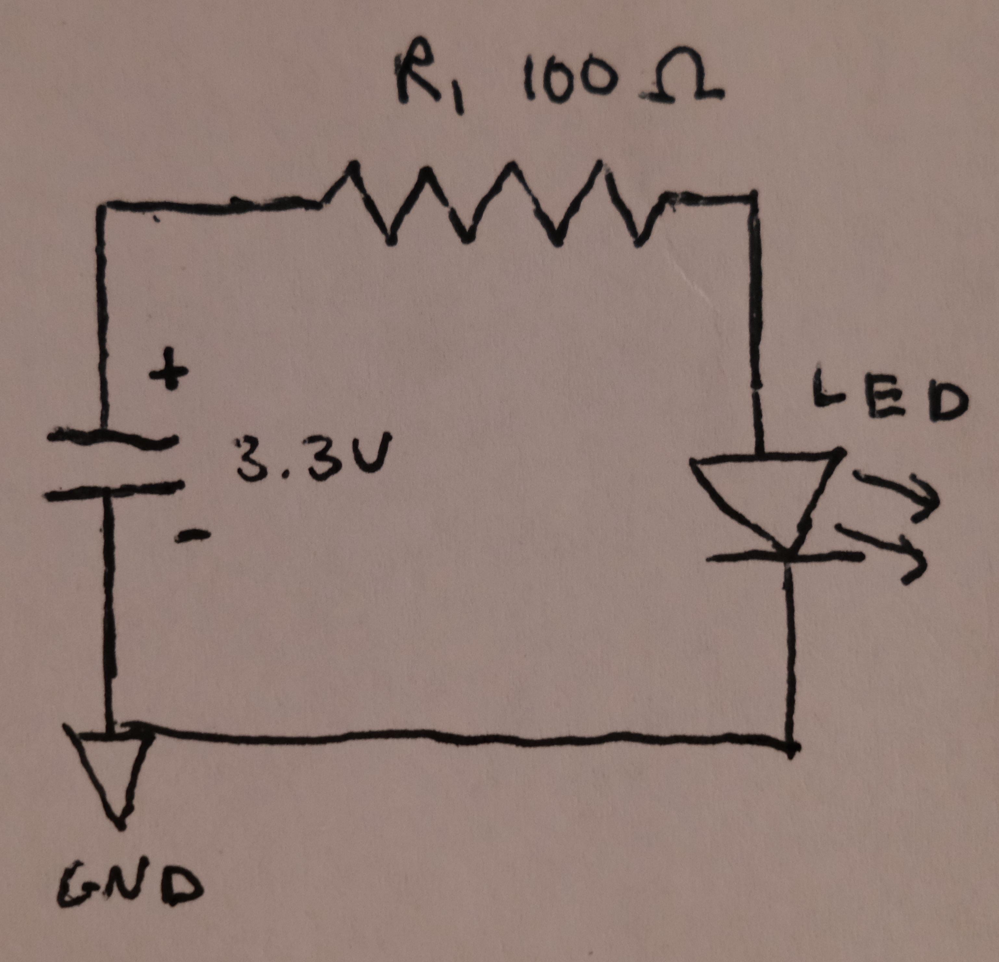
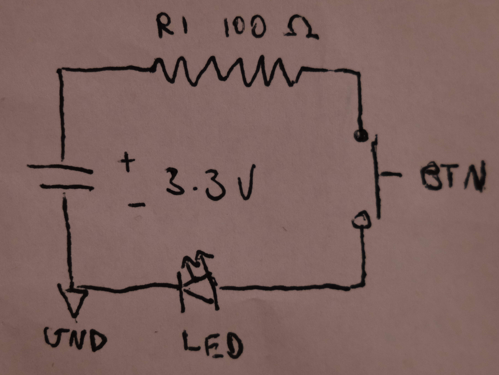

In this lab I created four basic circuits composed of an LED, a push button, and resistors. This lab introduces the push button as an electrical component, and explores
its different operations within a circuit.
Materials Used
All materials are sourced from the Elegoo Super Starter Kit UNO R3 Project Kit
x1 Power Supply Module
x1 Button
x1 Circuit Breadboard
x5 Breadboard Jumper Wires
x1 9V Battery with Snap-on Connector Clip
x1 100 Ohm Resistor
x1 Green LED
x1 Multimeter
Part 1: Setting up Power
I began building my circuit by inserting the + and - marked prongs of the power supply module into the corresponding + and - marked power rails on the breadboard.
Once I had connected the 9V battery to the power supply module via the snap-on connecter clip, I probed using jumper wires and a multimeter to ensure the voltage
outputs of the breadboard's power rails were 3.3 and 5 volts. The two pictures below show these respective measurements.
Part 2: (NOT) Blowing up an LED
3.3 Volt Circuit
Prior to introducing an LED into the circuit, I must first add a resistor to reduce the circuit's current. Without a resistor, the LED would likely fry upon contact with
the circuit. Knowing the LED's max current rating (40mA) as well as the circuit's voltage (3.3V) allows me to use Ohm's law to calculate the necessary resistance:
A 100 Ohm resistor will suffice. After inserting the resistor into the circuit, it is now safe to add the LED. The below images show my schematic and working circuit.

5 Volt Circuit
More resistance is necessary when powering the LED from the 5V output. To calculate this new value, I again used Ohm's law:
To create about 160 Ohms of resistance, I wired two 100 Ohm resistors in series. The below images show my schematic and working circuit.
Part 3: Switching the LED
Incorporating a momentary switch that turns on the LED most simply requires that when depressed, the button completes the circuit and permits electricity to
flow. Inversely, when left untouched, the button disallows the flow of electricity, breaking the circuit and keeping the LED off. This functionality is attained by placing a
button in series with the existing circuit components. The video below demonstrates the working circuit.

Extra Credit: Extra Volt
To reverse the functionality of the button, that is, to make the button turn the LED off rather than on, the button should be placed in parallel to the LED. Looking at the
circuit diagram (pictured below), the LED and push button reside on two individual vertically drawn wires. These two wires connect a pair of horizontally drawn wires which
stem from the battery's terminals. This wiring setup creates two loops through which the circuit's current can flow. When the push button is left unpressed, its loop of the circuit is
non-traversable for current, which must instead flow through the LED's portion of the circuit. When the button is pressed, its loop provides the path of least resistance for the electrons, and the
LED is not illuminated.